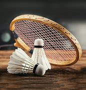
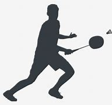
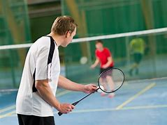
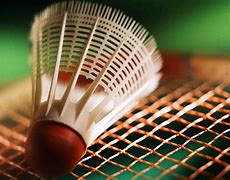
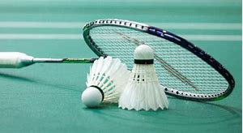

Badminton
Badminton, O que é?
Badminton é um esporte praticado entre dois ou quatro jogadores. Ainda que seja parecido com o tênis ,que usa raquetes,os campos são divididos por uma rede com suas peculiaridades. Ao invés de uma bola o Badminton utiliza uma espécie de peteca (Toda Matéria, 2022).
Figura 16, Badminton.
Onde é mais praticado esse esporte?
É muito popular em países do Oriente como, por exemplo, Cingapura, Índia, Indonésia, China, Paquistão, Japão e Tailândia. Fundamentos desse esporte(COSTA, 2017):
Figura 17, Badminton.
Os fundamentos técnicos do Badminton são as partes mais importantes do jogo, os movimentos e golpes utilizados pelos jogadores de Badminton. Os Fundamentos básicos do Badminton são oito: o Saque ou Serviço, a Empunhadura, o Clear, o Drop ou Drop-Shot, o Smash, o Drive, o Lob e o Net-Shot ou Net-Drop (COSTA, 2017).
História:
O Badminton foi criado na Inglaterra, no século XIX,foi inspirado em um jogo chamado POONA,que era praticado na Índia.No entanto, já havia um jogo semelhante sendo praticado na Grécia antiga:Peteca e Tamborete (Toda Matéria,2022).
Figura 18, Badminton.
Regras do Badminton:
- O jogo deve ser praticado um contra um, ou em duplas(COSTA, 2017);
- Uma partida é composta por três sets de 21 pontos cada(COSTA, 2017);
- O jogador não pode tocar na rede(COSTA, 2017);
- A peteca não pode tocar em seu corpo(COSTA, 2017);
- Não pode invadir o campo adversário(COSTA, 2017);
- Não é permitido dar dois toques na peteca no mesmo lado da quadra(COSTA, 2017);
Benefícios do Badminton:
Quando praticado frequentemente, o esporte pode trazer vários benefícios para o nosso corpo e mente. Portanto veja abaixo(Moraes ,2022);Figura 19, Badminton.
- Promove grande gasto calórico(Moraes ,2022);
- Fortalece o sistema cardiovascular(Moraes ,2022);
- Tonifica músculos das pernas, glúteos e braços(Moraes ,2022);
- Alivia o estresse(Moraes ,2022);
- Estimula concentração e foco (Moraes ,2022);
Equipamentos utilizados na prática de Badminton:
Figura 20, Badminton.
- Petecas;
- Raquetes;
- Cordas;
- Empunhadura;
- Haste;
- Sapatos;
- T-piece;
- Armação;
Referência:
Toda Matéria.”Badminton”. Disponível em: https://www.todamateria.com.br/badminton/. Acesso em: 2 abr. 2023
COSTA,Marcelo “Badminton”. Dicas Educação Física. Disponível em: https://www.dicaseducacaofisica.info/resumo-fundamentos-do-badminton/. Acesso em: 2 abr. de 2023;
MORAES, Júlia “Badminton”. Vital. Disponível em: https://vitat.com.br/badminton/. Acesso em:2 abr. de 2023.